Cylinder Block Assembly (2AZ-FE) Reassembly |
| 1. Install Ring Pin |
Using a plastic-faced hammer, tap in the ring pins at the positions shown in the illustration.
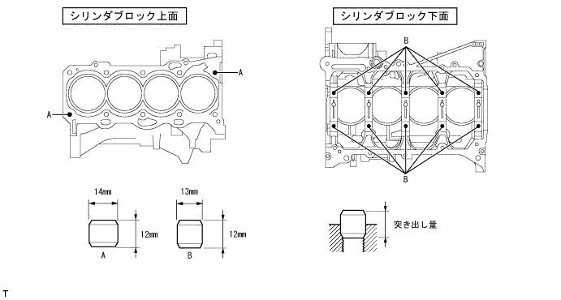
| Ring Pin Type | Protrusion Height [mm] |
|---|---|
| A | 6 |
| B | 5 |
| 2. Install Stud Bolt |
Using E5 and E7 torx socket wrenches, install the stud bolts at the positions shown in the illustration.
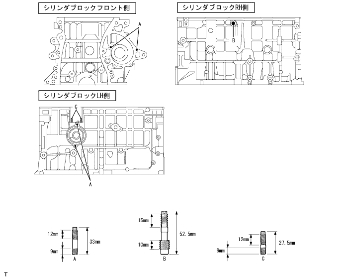
| 3. Install Straight Pin |
Using a plastic-faced hammer, tap in the straight pins at the positions shown in the illustration.
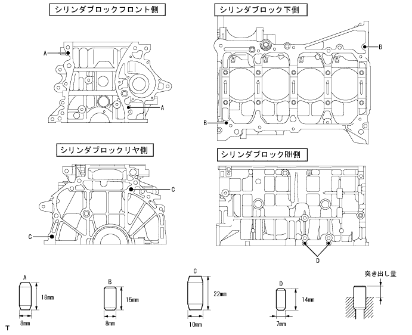
| Straight Pin Type | Protrusion Height [mm] |
|---|---|
| A | 8 |
| B | 7.5 |
| C | 12 |
| D | 5 |
| 4. Inspect Crankshaft Oil Clearance |
Clean the main journals and bearings.
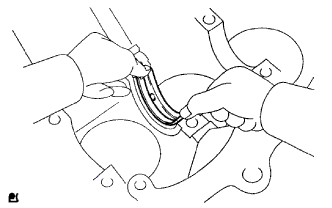 |
Align the claws and install the crankshaft bearings with oil grooves (upper bearings) to the cylinder block.
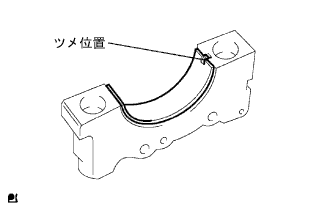 |
Align the claws and install the crankshaft bearings No.2 (lower bearings) to the bearing caps.
Place the crankshaft on the cylinder block.
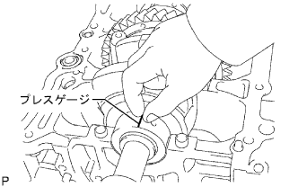 |
Lay a strip of Plastigage across each crankshaft journal.
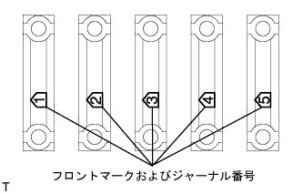 |
Check the front marks of the bearing caps and install them to the cylinder block.
Apply a light coat of engine oil to the threads and seats of the bolts.
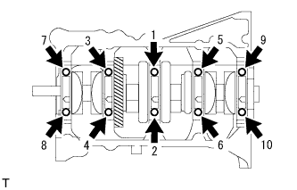 |
Temporarily tighten the bolts in 2-3 steps in the order shown in the illustration, then tighten them to the specified torque.
Tighten the bolts again to the specified torque in the order shown in the illustration.
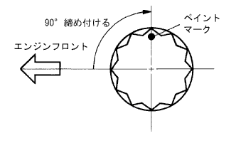 |
Mark the front of the bolt heads with paint.
Using the paint marks as a guide, tighten each bolt an additional 90° in the tightening order.
Check that all paint marks have been turned 90° in the tightening direction.
Remove the bearing caps.
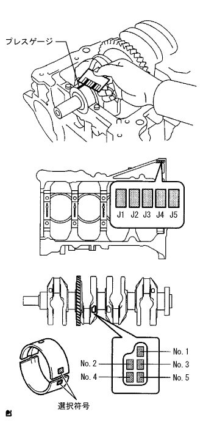 |
Measure the Plastigage at its widest point.
If the clearance is more than the maximum, select and replace the bearings.
| Mark | Cylinder Block Bore Diameter [mm] | Crankshaft Journal Diameter [mm] |
|---|---|---|
| 0 | 59.000-59.002 | 54.999-55.000 |
| 1 | 59.003-59.004 | 54.997-54.998 |
| 2 | 59.005-59.006 | 54.995-54.996 |
| 3 | 59.007-59.009 | 54.993-54.994 |
| 4 | 59.010-59.011 | 54.991-54.992 |
| 5 | 59.012-59.013 | 54.988-54.990 |
| 6 | 59.014-59.016 | - |
| Sum of Block and Crankshaft Journal Marks | Bearing Selection Mark | Bearing Center Wall Thickness [mm] | Oil Clearance [mm] |
|---|---|---|---|
| 0-2 | 1 | 1.993-1.996 | 0.017-0.039 |
| 3-5 | 2 | 1.997-1.999 | 0.017-0.040 |
| 6-8 | 3 | 2.000-2.002 | 0.018-0.040 |
| 9-11 | 4 | 2.003-2.005 | 0.019-0.040 |
| 5. Install Oil Nozzle Sub-assembly NO.1 |
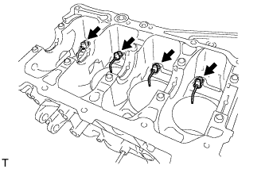 |
Using a socket hexagon wrench (5mm), install the 4 oil nozzles No.1.
| 6. Install Piston |
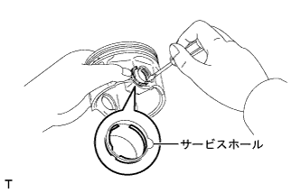 |
Using a small screwdriver, install a new piston pin hole snap ring on one side only.
Heat the piston to approximately 80°C.
Apply engine oil to the piston pin and the connecting rod small end.
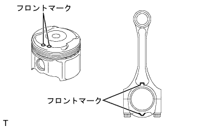 |
Align the front mark of the piston with the front mark of the connecting rod, and push in the piston pin with your thumb until it contacts the snap ring.
Using a small screwdriver, install a new piston pin hole snap ring.
| 7. Install Piston Ring Set |
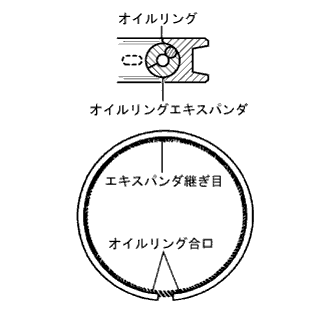 |
Install the oil ring expander and oil ring by hand.
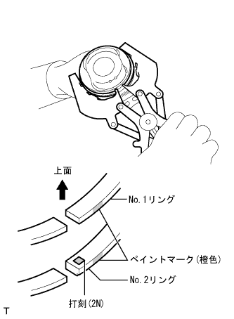 |
Using a piston ring expander, install the rings so that the paint marks at the end gaps are on the right side.
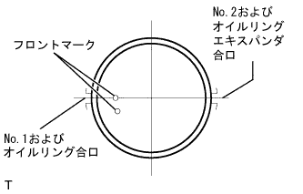 |
Position the piston ring end gaps as shown in the illustration.
| 8. Install Crankshaft Bearing |
Align the claws and install the crankshaft bearings with oil grooves (upper bearings) to the cylinder block.
| 9. Install Crankshaft Bearing NO.2 |
Align the claws and install the crankshaft bearings No.2 (lower bearings) to the bearing caps.
| 10. Install Crankshaft Thrust Washer Upper |
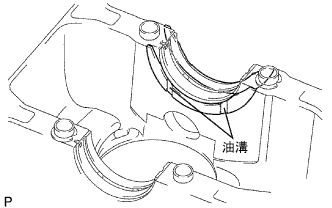 |
Install the thrust washers to the No. No.3 journal of the cylinder block with the oil grooves facing outward.
Apply engine oil to the surfaces of the thrust washer set.
| 11. Install Crankshaft |
Apply engine oil to the upper bearing surfaces and install the crankshaft.
Apply engine oil to the lower bearing surfaces.
Check the front marks of the bearing caps and install them to the cylinder block.
Apply a light coat of engine oil to the threads and seats of the bolts.
Temporarily tighten the bolts in 2-3 steps in the order shown in the illustration, then tighten them to the specified torque.
Tighten the bolts again to the specified torque in the order shown in the illustration.
Mark the front of the bolt heads with paint.
Using the paint marks as a guide, tighten each bolt an additional 90° in the tightening order.
Check that all paint marks have been turned 90° in the tightening direction.
Check that the crankshaft turns smoothly.
| 12. Install Connecting Rod Bearing |
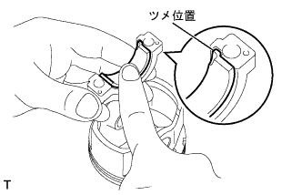 |
Align the claws and install the connecting rod bearings to the connecting rods and connecting rod bearing caps.
| 13. Install Piston with Connecting Rod |
Apply engine oil to the cylinder walls, the piston circumference and the connecting rod bearing surfaces.
Check the positions of the piston ring end gaps again.
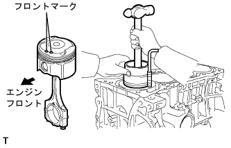 |
Check the front mark and, using a piston ring compressor, install the piston with connecting rod.
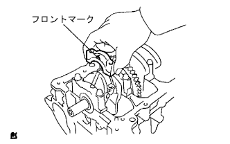 |
Check the combination of the connecting rod and cap and the front mark on the cap, and assemble the cap to the connecting rod.
Apply a light coat of engine oil to the threads and seats of the bolts.
 |
Using a socket wrench (12mm), temporarily tighten the bolts in 2-3 steps, then tighten them to the specified torque.
 |
Mark the front of the bolt heads with paint.
Using the paint marks as a guide, tighten each bolt an additional 90°.
Check that the crankshaft turns smoothly.